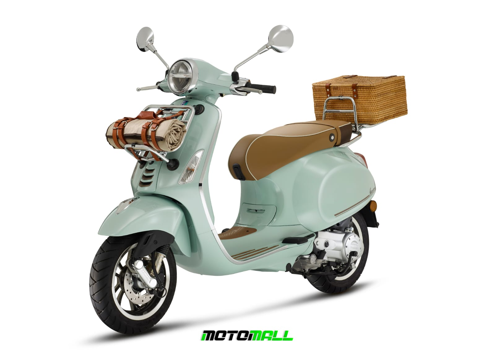
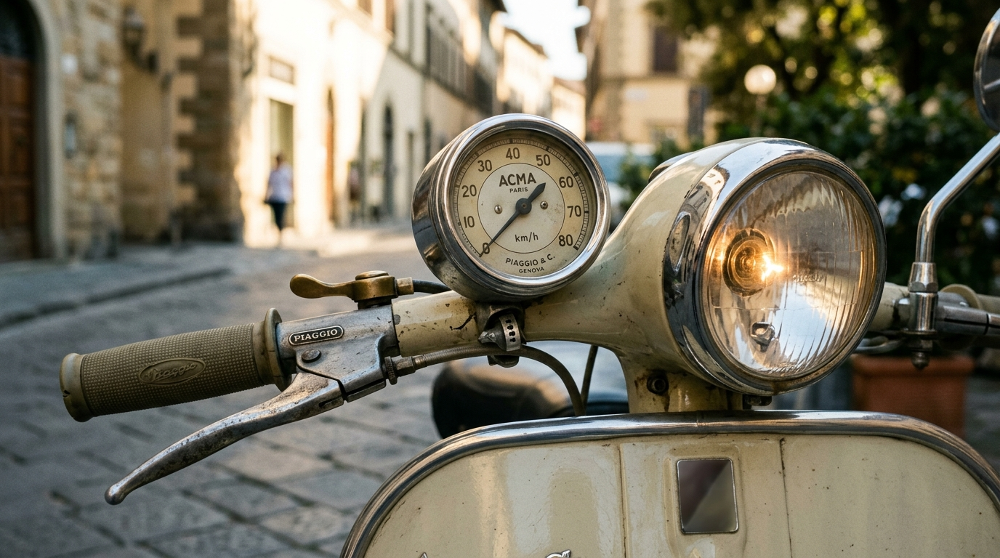

1946 · Italia ↻ VoltearPiaggio Vespa
Creada por Corradino D'Ascanio, la Vespa motorizó a la Europa de posguerra con su chasis autoportante, protección contra salpicaduras y diseño atemporal.
Motor
98 cc / 2T
Potencia
3.2 CV
Velocidad
60 km/h

Detalle Clásico ↺ VolverIcono del Diseño
Su elegante manillar con faro redondo y chasis de chapa estampada nacieron inspirados en trenes de aterrizaje aeronáuticos, redefiniendo el transporte urbano.
Chasis
Aeronáutico
Ventas
+1M en 10 años
Cine
Vacaciones en Roma